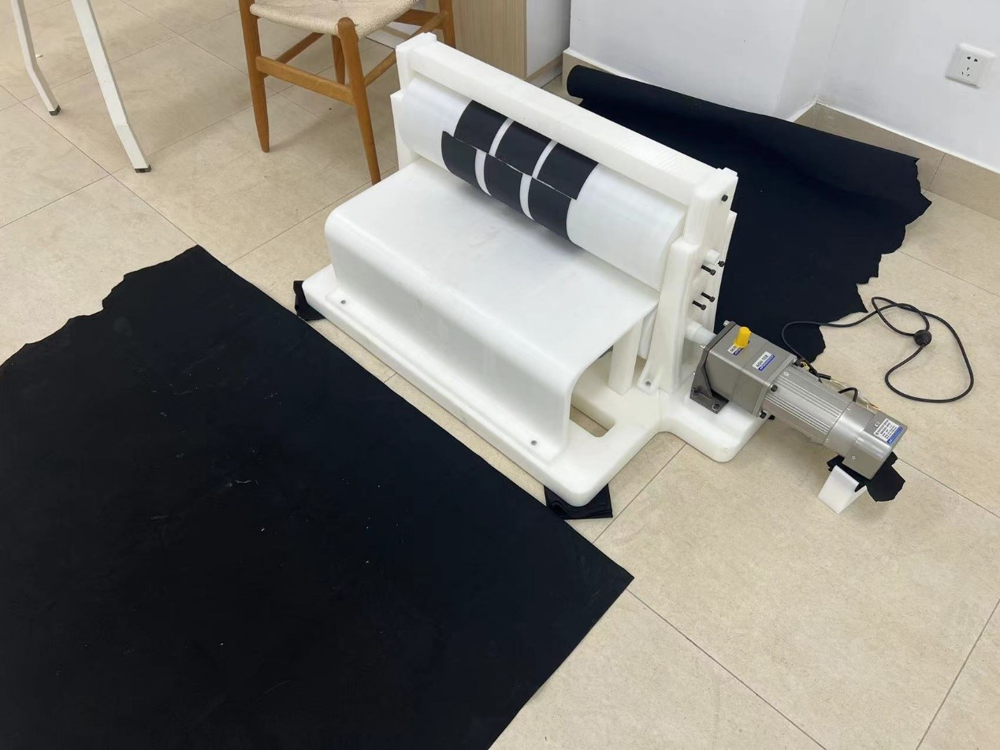
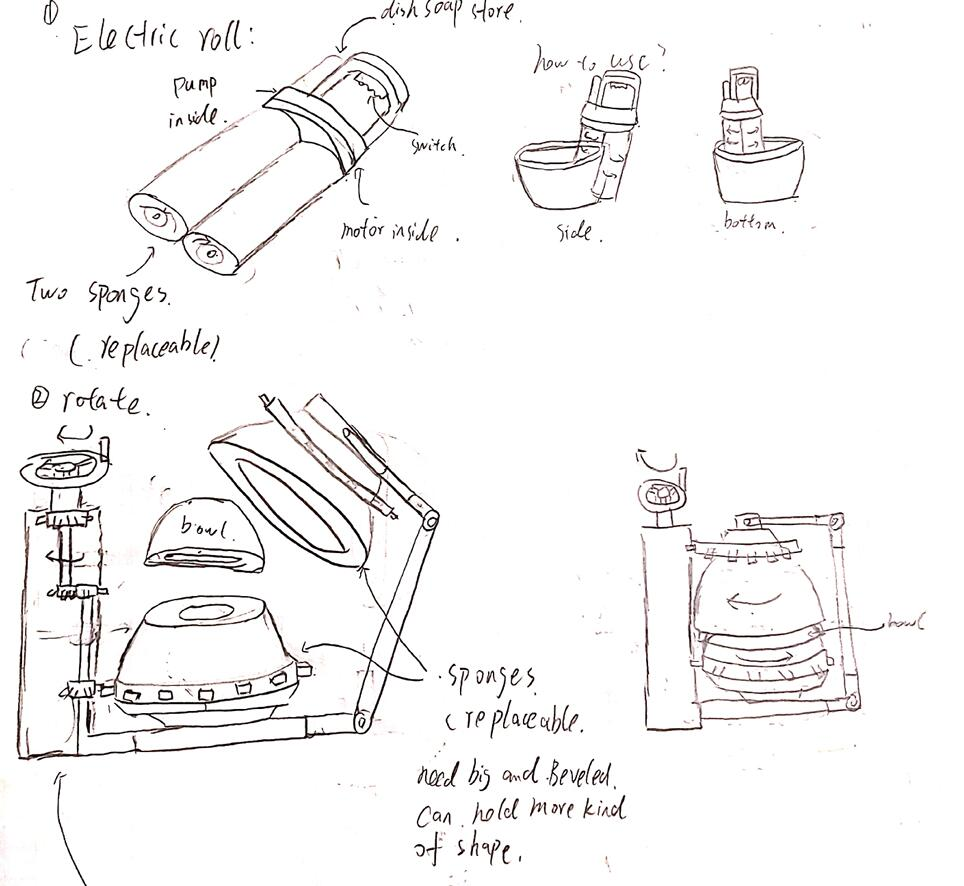
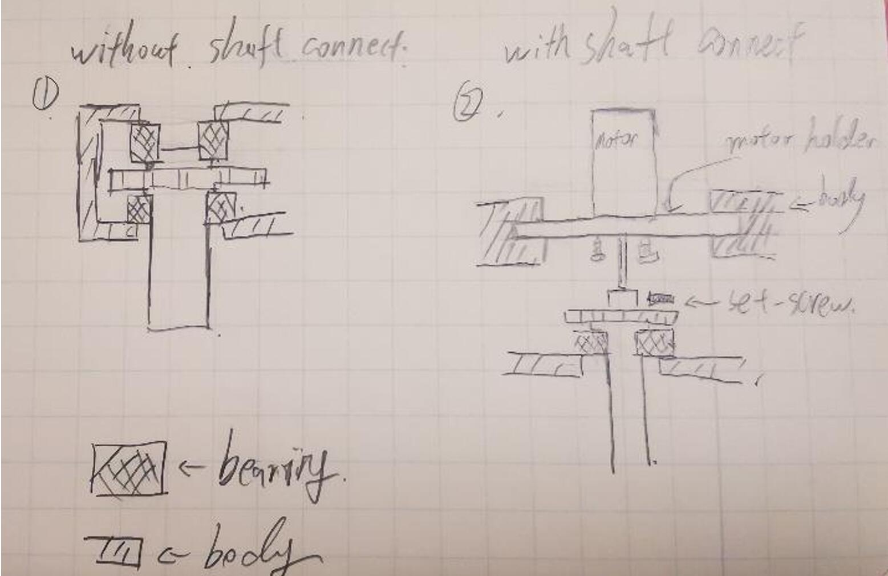
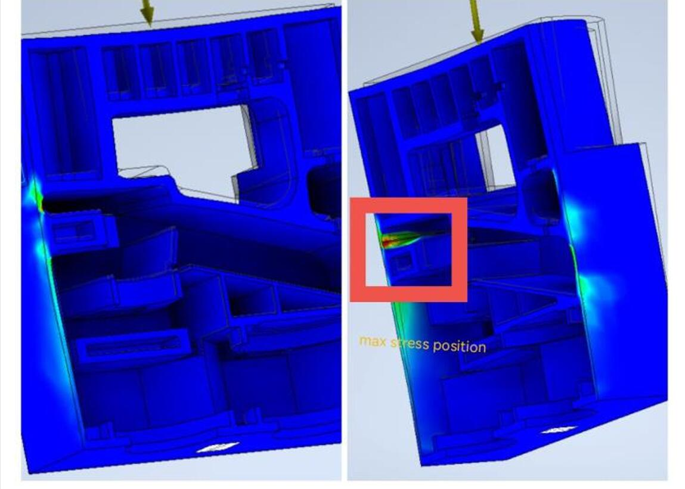
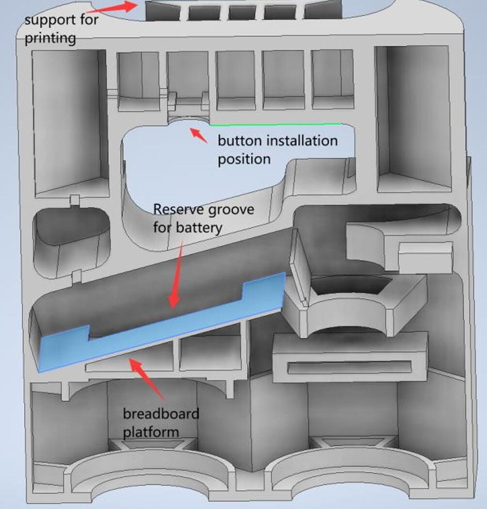

Collecting scattered baseballs during practice sessions can significantly disrupt training efficiency. The Home Base robot is designed to automate this tedious task. By automatically identifying and retrieving baseballs, it reduces manual labor, increases productivity, and provides a specialized solution tailored to baseball fields, addressing a current gap in automated sports technology.
Home Base in Action (GIF)Robotic Setup for Home Base
Design and Optimization
Home Base integrates an advanced computer vision system using YOLOv5-lite, optimized for efficient performance on a Raspberry Pi 4B edge device. To achieve real-time performance on hardware with limited computing resources, three major optimizations were performed. Model complexity was reduced by pruning redundant convolution layers, significantly speeding up calculations. The model was then transplanted from PyTorch to ONNX format, simplifying neural network structures and reducing memory usage. Finally, quantization converted numerical precision from Float32 to Int8, drastically lowering computational requirements and further enhancing inference speed.
Additionally, robust communication between the Raspberry Pi and the Arduino microcontroller was implemented. A handshake protocol was established to ensure that commands sent from the Raspberry Pi were executed sequentially and reliably, eliminating conflicts and ensuring smooth robot operations.
Performance and Results
These optimizations resulted in a tenfold increase in processing speed, achieving 3-5 frames per second (FPS) compared to the original rate of 0.5-1.2 FPS. The accuracy experienced only a slight reduction of around 5%, which was acceptable given the significant gain in operational efficiency. Field tests confirmed the robot’s effectiveness in rapidly identifying and collecting baseballs, demonstrating clear advantages over manual collection.
Performance Results
Conclusion
Home Base successfully demonstrates the potential of automation in sports, particularly baseball, by significantly streamlining ball collection processes. The robot’s design not only meets the project's initial objectives but also sets the foundation for future enhancements, such as advanced distortion correction and further optimization of larger, more robust models.
My Role
My primary contribution involved developing, optimizing, and deploying the computer vision system onto the Raspberry Pi. I trained and fine-tuned the YOLOv5-lite model, implemented various lightweight optimization methods, and established robust communication protocols between the Raspberry Pi and Arduino. These tasks were critical in enabling the robot to operate effectively in real-time, significantly contributing to the project's success.
Automated Kelp Measuring Device
Introduction
Accurate measurement of kelp dimensions and physiological conditions is essential for research in kelp cultivation. Traditional manual measurement techniques often introduce significant human error, particularly when measuring irregularly shaped kelp without clearly defined midlines. To address these challenges, our team developed an automated kelp measuring device aimed at enhancing measurement accuracy, standardizing data collection procedures, and improving overall efficiency.
Design Process and Development
At the beginning of the project, I proposed two mechanical design concepts for scanning kelp: a gantry-type and a roller-type structure. After team evaluations, the roller-type design was selected for prototyping due to its compactness and practicality. I was responsible for the full scope of the mechanical design, including concept generation, detailed modeling, finite element analysis (FEA), and iterative optimization through practical testing.
The initial challenges included material limitations—specifically, the brittleness of ABS-printed shafts under non-axial forces, necessary for the roller's operation. Additionally, budget constraints required minimizing material use without compromising structural integrity. Another challenge was the significant variation in kelp thickness, particularly at the stem, which posed a risk of jamming or slipping during the rolling process.
Final Design and Technical Solutions
To overcome these challenges, I implemented several critical design improvements. The roller system was designed with specialized grooves on both the top and bottom rollers, effectively limiting unnecessary degrees of freedom and providing adequate structural support against non-axial forces. Anti-slip rubber pads were strategically placed on the rollers to enhance friction, thereby reducing the force required to roll the kelp and preventing slippage.
Through iterative refinement and testing, the final prototype achieved a weight reduction of 21.2%—approximately 5.46 kg lighter than the initial model—significantly enhancing portability and reducing production costs. Additionally, structural integrity was vastly improved, with the safety factor increasing from 0.73 in the initial model to 2.55 in the optimized design.

Roller-type Prototype
Performance and Results
The final automated kelp measuring device effectively streamlined kelp data collection. Using a semantic segmentation algorithm combined with continuous image stitching, the device measures kelp dimensions—length, width, and thickness—and identifies key physiological states, such as health conditions, lesion presence, and spore size. The entire process for individual kelp measurements and data entry into a database was completed within 3 to 5 seconds per specimen.
Conclusion
This automated kelp measuring device significantly improves measurement accuracy and standardizes data collection, providing a robust and efficient tool for kelp research. Future enhancements might involve integrating advanced imaging or ultrasound techniques to further refine kelp characterization and physiological analysis.
My Role
My role encompassed the entire mechanical design and optimization process, including initial concept development, detailed CAD modeling, structural analysis using FEA, and iterative physical prototyping and testing. I also participated in on-site measurements and directly communicated with users to incorporate on-site requirements into the design. These contributions were pivotal in overcoming the project's mechanical and structural challenges, directly impacting the device’s reliability and effectiveness in field applications.
Handheld Dishwasher
Introduction
Washing dishes is a repetitive, time-consuming chore—especially inconvenient for frequent movers or those living in compact spaces without traditional dishwashers. Our team designed a compact handheld dishwasher to efficiently clean tableware, significantly enhancing convenience for temporary or small-space living situations.
Design & Engineering
I led the mechanical design, developing the housing structure, rolling shafts, transmission gears, and bearing assemblies. We initially explored two concepts: a handheld washer with rotating foam columns and a compact box washer. User feedback favored the handheld design due to its portability and ease of use.

design concept
Early prototypes faced friction and alignment challenges with the gear-driven shafts. Through iterative improvements, precision-engineered bearings were incorporated, reducing friction and simplifying gear interactions. The redesign streamlined the housing from 16 complex parts down to 6, improving reliability and ease of assembly.

Shaft and Bearing Design
Structural Analysis & Optimization
Finite Element Analysis (FEA) significantly enhanced structural integrity, focusing on shaft safety factors under various loads and stress distribution in the housing. These optimizations achieved a final safety factor of 2.778 under a 40 MPa non-axial load, ensuring durability and robustness.

FEA Analysis
Prototype Development & Evaluation
Due to complex geometries, the final prototype utilized 3D printing technology. While addressing precision fitting and printing accuracy challenges, iterative refinements effectively improved performance. However, ergonomic improvements remain essential, particularly optimizing handle comfort and overall size.

3‑D printed prototype modeling
Summary & Reflection
Although the prototype requires further ergonomic and size optimization, the project provided valuable experience in mechanical design, rapid prototyping, and collaborative problem-solving. Next steps involve refining grip comfort, miniaturizing components, and integrating electronic controls more efficiently.
My Responsibilities
I am responsible for the entire mechanical design process, including concept modeling, detailed engineering analysis using finite element analysis (FEA), prototyping, and mechanical testing. I also optimize the support structure for the model for 3D printing manufacturing.